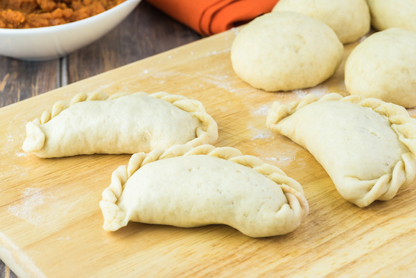

Savory Sweet Potato and Chorizo Empanadas

Introduction
Sometimes you just need a snack to get you through the day. This sweet, yet savory dish
is easy to prep, fun to make and is sure to satisfy any craving. I like to use store bought pie crust to make my empanada pastry.
Pie crust is buttery and easy to make into empanada shells!
Prep Time 15 minutes
Active Time 15 minutes
Total Time 30 minutes
Instructions for filling:
One medium apple, cubed
One Sweet Potato, peeled and cubed
½ pound Chorizo
½ cup Dates, diced
½ Sweet Onion
½ Red Bell Pepper
1 tbsp Minced garlic
Black Pepper
Salt
1 tbsp Olive Oil
One package of premade pie crust
Bake the potatoes and apple tossed in olive oil separately on a cookie sheet lined with parchment paper in the oven at 400 degrees for 30 minutes.
Then I browned the 1/2 pound of chorizo in a non-stick pan, then strained off the meat and set it aside in a bowl.
Leave the chorizo drippings in the pan and used it to sauteed diced red bell pepper, onions and garlic.
Then I added the potatoes, apples, chopped dates, and cooked chorizo to the mix and brown for an additional 5 minutes.
I added black pepper and red pepper flakes to give the mixture an extra kick.
I put the mixture aside to cool before rolling out the dough and stuffing the empanadas.
Instructions for Stuffing the Empanadas:
Preheat oven to 350*F

Prepare a cookie sheet with parchment paper. Set aside.
Roll out pie crusts then use a medium size bowl or extra large mug to trace circles onto the pie crust.
Mix together the leftover pie crust and roll out the dough to continue cutting circles until you have 6 to 8 total.

Lay the circle down on a prepared cookie sheet and add 2 - 3 Tablespoons of filling.

Fold pie crust circle in half, keeping the filling inside and pinch the edges to form each pastry.
Arrange empanadas on a cookie sheet and bake for up to 15 minutes or until tops are golden. Place the empanadas on a cookie sheet to cool for 5 mins, then serve.